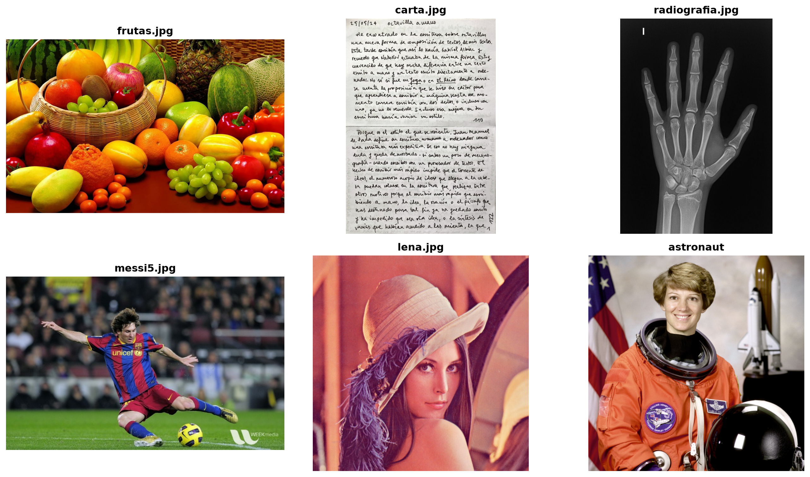

Esta práctica reúne los temas de la Unidad 3 en un solo flujo: detección de bordes, umbralización global y adaptativa, agrupamiento por k-means y morfología. La meta no es encontrar un método universalmente mejor, sino explicar qué información aprovecha cada método y en qué tipo de imagen resulta más útil.
Se compararán imágenes de objetos, escenas naturales, una radiografía, muestras clásicas de OpenCV y ejemplos de scikit-image. Todas las figuras se generan al renderizar este documento.
¿Qué bordes y regiones ayudan a localizar caracteres?
Anatomía
radiografia.jpg
¿Cómo afectan el bajo contraste y las estructuras superpuestas?
OpenCV
messi5.jpg, lena.jpg
¿Qué ocurre con textura, piel, cabello y objetos?
scikit-image
astronaut, coins
¿Funciona igual un método en una escena y en objetos separados?
messi5.jpg y lena.jpg son muestras oficiales de OpenCV. astronaut y coins se cargan desde skimage.data, por lo que no es necesario copiar esos archivos al repositorio.
Code
from pathlib import Pathimport cv2import numpy as npimport pandas as pdimport matplotlib.pyplot as pltfrom skimage import datacarpeta_imagenes = Path("imagenes")# Cada entrada devuelve una imagen RGB y un nombre legible.def cargar_banco(): banco = {}for nombre in ["frutas.jpg", "carta.jpg", "radiografia.jpg", "messi5.jpg", "lena.jpg"]: imagen_bgr = cv2.imread(str(carpeta_imagenes / nombre), cv2.IMREAD_COLOR)if imagen_bgr isNone:raiseFileNotFoundError(f"No se encontro la imagen: {nombre}") banco[nombre] = cv2.cvtColor(imagen_bgr, cv2.COLOR_BGR2RGB) banco["astronaut"] = data.astronaut() banco["coins"] = data.coins()return bancobanco = cargar_banco()fig, axs = plt.subplots(2, 3, figsize=(14, 8))for ax, (nombre, imagen) inzip(axs.ravel(), banco.items()): ax.imshow(imagen, cmap="gray"if imagen.ndim ==2elseNone) ax.set_title(nombre, fontweight="bold") ax.axis("off")plt.tight_layout()plt.show()

3 Flujo común de comparación
Para cada imagen se calculan:
Canny, para localizar cambios bruscos.
Otsu, para separar clases globales de intensidad.
Umbral adaptativo, para compensar iluminación no uniforme.
K-means, con \(K=3\) grupos de intensidad.
Apertura y cierre, para refinar la máscara del grupo más oscuro.
La elección del grupo más oscuro es solo una hipótesis de trabajo. En una aplicación real se debe seleccionar el grupo según el objetivo y la imagen.
Estas medidas no dicen por sí solas cuál resultado es correcto, porque no contamos con una máscara de referencia. Ayudan a detectar resultados extremos: una máscara casi completamente blanca puede incluir demasiado fondo y una máscara con muchos componentes pequeños puede estar capturando ruido.
frutas.jpg permite estudiar una situación muy frecuente en visión por computadora: primero se separan los objetos del fondo (segmentación) y después se calculan características para decidir qué objeto es cada uno (identificación). Estas tareas no son iguales. Una máscara puede estar bien delimitada y aun así no permitir distinguir una manzana de una naranja.
5.1 ¿Por qué segmentar por color?
En escala de grises, dos frutas de colores distintos pueden tener intensidades parecidas. Los espacios de color conservan información adicional:
RGB: representa directamente los canales capturados por la cámara, pero mezcla color e iluminación en los tres canales.
HSV: separa aproximadamente el tono (H), la saturación (S) y el brillo (V). Es útil para formular reglas como “colores intensos y no demasiado oscuros”.
Lab: separa una luminosidad (L) de dos componentes cromáticas. Puede ser más estable cuando cambia la iluminación, aunque sus umbrales requieren más calibración.
No existe un espacio de color que siempre sea mejor. La elección depende del fondo, la iluminación y de si las frutas están maduras, manchadas o parcialmente ocultas.
5.2 Segmentación no supervisada por color con k-means
En lugar de fijar manualmente los colores, k-means puede encontrar grupos de píxeles en el espacio HSV. Aquí usamos tono, saturación y brillo como variables. Los centroides no reciben nombres como “manzana” o “naranja” de manera automática: primero hay que observarlos y relacionarlos con las regiones de la imagen.
Una estrategia reproducible consiste en seleccionar grupos con saturación alta. Eso suele excluir fondos grises o blancos, pero no necesariamente separa una fruta de otra si comparten colores. La selección siguiente es una regla de segmentación, no una identificación semántica.
Esta tabla todavía no clasifica frutas por sí sola. Para identificar tipos de fruta se necesitaría un conjunto de entrenamiento con ejemplos etiquetados y características comparables. Por ejemplo, se podrían usar color medio, circularidad, textura y descriptores de forma para entrenar un clasificador.
5.4 Limitaciones y preguntas
¿Qué ocurre si una fruta tiene zonas verdes y maduras al mismo tiempo?
¿Qué pasa si el fondo tiene un color parecido al de la fruta?
¿La iluminación modifica el tono, la saturación o principalmente el brillo?
¿Qué frutas se tocan y por eso aparecen como una sola componente?
¿Es mejor elegir los grupos por saturación, por tono o manualmente?
¿Qué errores serían más graves: perder una fruta o incluir parte del fondo?
Como extensión, compara k-means en gris, RGB, HSV y Lab usando el mismo valor de \(K\). Después justifica qué representación usarías para un sistema de conteo y qué representación usarías para un sistema de identificación.
6 Caso aplicado: radiografía
La radiografía es útil para estudiar bajo contraste y estructuras internas. Canny puede resaltar corticales y articulaciones, pero también textura ósea. Otsu o k-means pueden producir una primera máscara de las zonas radiopacas, pero no garantizan aislar una estructura anatómica concreta.
Es importante distinguir dos objetivos:
Segmentar la mano completa: una máscara global o k-means puede ser un punto de partida.
Localizar una fractura o una articulación: se necesita analizar regiones, bordes y contexto; no basta con elegir automáticamente el grupo más oscuro o más claro.
Este ejemplo es educativo y no constituye diagnóstico médico.
7 Caso aplicado: satélite e imágenes aéreas
Para estudiar una aplicación satelital se necesitaría una imagen RGB con al menos agua, vegetación, suelo desnudo y zona urbana. Con ella se podría:
usar k-means para agrupar coberturas;
usar umbralización para extraer agua o vegetación;
usar bordes para localizar carreteras y límites de parcelas;
usar morfología para eliminar regiones pequeñas.
Una extensión especialmente interesante sería añadir una imagen multiespectral con banda roja e infrarrojo cercano. En ese caso se puede calcular el NDVI y comparar una clasificación basada en color/intensidad con una basada en un índice físico. La variación atmosférica y de iluminación hace importante comparar umbrales globales y locales.
8 Otras aplicaciones
Inspección industrial. Canny permite localizar grietas y contornos; la umbralización separa defectos del material y la morfología limpia partículas pequeñas. El criterio de éxito debe indicar si es peor perder un defecto o marcar una región correcta como defectuosa.
Documentos y texto. Otsu puede separar tinta y papel cuando el histograma es bimodal. El umbral adaptativo suele ser mejor con sombras, arrugas o iluminación desigual.
Microscopía. K-means puede separar células o niveles de tinción cuando existen grupos distinguibles de intensidad o color. Apertura y cierre ayudan a quitar partículas y rellenar huecos.
Robótica. Los bordes y máscaras permiten localizar piezas, estimar orientación y calcular área, centroide o perímetro antes de una etapa de reconocimiento.
9 Actividad de análisis
Para cada grupo de imágenes, responde:
¿Qué método produce la representación más útil para el objetivo elegido?
¿Qué errores aparecen: ruido, pérdida de regiones, huecos, fragmentación o inclusión del fondo?
¿Qué relación existe entre el histograma y el resultado de Otsu?
¿Es razonable elegir siempre el grupo más oscuro en k-means?
¿Qué cambió después de la apertura y el cierre?
¿Qué método usarías en una aplicación real y qué parámetro validarías?
Como reto, repite k-means con \(K=2\) y \(K=4\), cambia los umbrales de Canny y compara blockSize=15 frente a blockSize=51 en el umbral adaptativo.